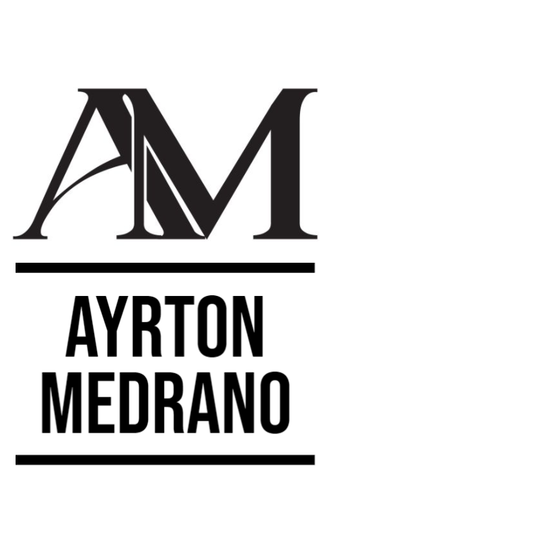
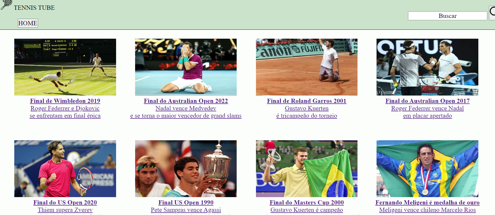
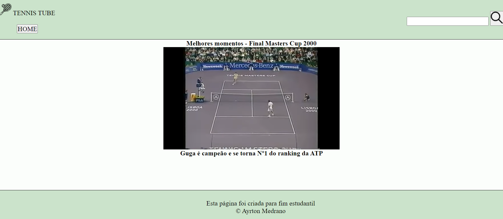

Sobre mim
Experiência
Soft-Skills
Galeria de Projetos
Entre em contato
Redes sociais
Sistema de busca de Vídeos TenisTube
 
TenisTube
Buscador de vídeos feito inteiramente com HTML e CSS, fazendo usos de vídeos diretamente do Youtube.
Site inteiramente responsivo.
Acesse o código da página aqui